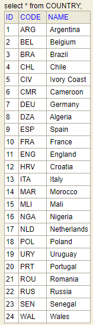
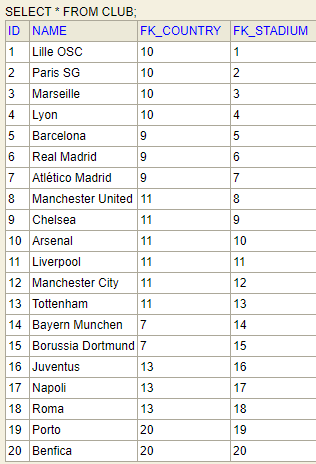

JPA Learning
Session #1 : select N+1
By Gildas Huart
Objectives
Better understand :
- EAGER vs LAZY
- Select N+1
- Cache levels
- Fetching
Program
- JPA concepts
- Demonstration
JPA concepts
- EntityManager
- Persistence context
- Cache
- Eager vs Lazy
Entity Manager
JPA interface used to :
- Create/Update/Delete entities
- Find entities by primary key
- Query over entities
Persistence Context
- Set of entities managed by an Entity Manager
- Entities sorted by ID and CLASS (unique)
- 1 EntityManager <-> 1 PersistenceContext
- Also called 1st level cache
Persistence Context : Lifecycle
Same as Entity Manager
Cleared when :
Cache
Also called, 2nd level cache
- Storage for @Cacheable entities
- Shared by all EntityManager within an application
EAGER Fetching
A relationship marked as EAGER must be fetched with the entity
Even if it is not needed !
- Best case scenario : join fetch
- Worst case scenario : select on the fly (select N+1)
Select N+1
- First query returns X entities
- Each entity has a relationship with another entity
- The relationship is fetched eagerly
- For that 1st query, we'll load N more (1<=N<=X)
LAZY loading
A relationship marked as LAZY is not fetched.
But the loading is possible later...
... if the entity is still in the persistence context !
Else, we get the famous LazyInitializationException
Application
- Configuration
- Data Model
- Data
- Demo
Configuration
- Spring Boot - 2.3.1
- JPA - 2.2
- Hibernate - 5.4.17
- EhCache - 3.8.1
- H2 database (in memory)
- Embedded Tomcat for H2 console
Data Model

Data



Demo


Conclusions
- EAGER loading without join fetch leads to select N+1
- Solving select N+1 leads to unreasonable joins
- Best strategy : good mapping at start
- If too late : Hibernate 5.4 + EntityGraph / fetchgraph
My advices
- @Cacheable entities : EAGER
- Cache loaded at startup
- All the rest : LAZY